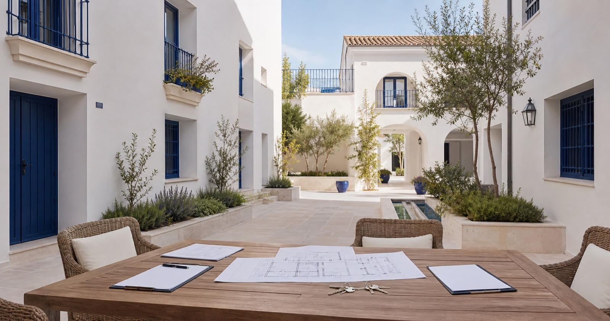

Constitución de la comunidad
Título constitutivo, división horizontal, estatutos y reglas necesarias para organizar la comunidad.
Área de práctica
Asesoramiento para comunidades, administradores y propietarios en acuerdos, morosidad, obras, estatutos y convivencia.

La mayoría de las personas viven hoy en un edificio o una urbanización con una comunidad de propietarios. En torno a las comunidades surgen problemas de convivencia y litigios relacionados con terrazas, trasteros, ascensores, ruidos, elementos comunes o privativos, estatutos, reglamentos, gastos, impugnaciones y derechos y obligaciones de los vecinos.
Prestamos asesoramiento para elaborar convocatorias y actas, revisar acuerdos, preparar impugnaciones y reclamar deudas comunitarias. También representamos a propietarios en juntas y orientamos a comunidades cuando deben adoptar una decisión con consecuencias jurídicas.
El asesoramiento puede dirigirse a la comunidad, a su presidencia o administración, o a un propietario individual. Antes de intervenir aclaramos a quién representamos y comprobamos que no exista un conflicto de intereses.
Servicios
Título constitutivo, división horizontal, estatutos y reglas necesarias para organizar la comunidad.
Revisión de convocatorias, orden del día, mayorías y redacción precisa de los acuerdos adoptados.
Análisis del acuerdo, su adopción, los requisitos, la legitimación y los plazos para valorar su impugnación.
Actuaciones ante acuerdos válidamente adoptados que no se ejecutan o dejan al propietario desprotegido.
Preparación de la reclamación de cuotas mediante requerimiento y, cuando procede, procedimiento monitorio o declarativo.
Reclamaciones cuando una avería en un elemento común causa daños y la comunidad no actúa adecuadamente.
Instalación, sustitución, contribución a gastos y revisión de contratos con empresas mantenedoras.
Valoración de esta vía cuando la junta no logra adoptar determinados acuerdos por falta de la mayoría exigida.
Reclamaciones por daños o defectos, con especial atención a los plazos y a los informes técnicos necesarios.
Intervención ante alteraciones prohibidas o no autorizadas en elementos comunes o en inmuebles particulares.
Orientación ante ruidos, actividades insalubres o conductas que afectan de forma continuada a la convivencia.
Preparación de la posición jurídica y representación del propietario cuando resulte conveniente y posible.
A quién ayudamos
Las necesidades de una comunidad no son las mismas que las de un propietario individual. Definir correctamente la representación es el primer paso.
Especialista relacionado
Vicente Torras MontoyaAbogado especialista en Propiedad Horizontal y mediador civil y mercantil.
Cómo trabajamos
Revisamos quién adopta la decisión, cómo se documentó y qué derechos pueden verse afectados.
Analizamos estatutos, mayorías, comunicaciones, legitimación y los plazos que puedan resultar aplicables.
Preparamos la comunicación, negociación, reclamación o defensa judicial adecuada al objetivo.
Preguntas frecuentes
Depende del contenido del acuerdo, de cómo se adoptó, de la posición del propietario y del cumplimiento de los requisitos y plazos legales. Es importante revisar el acta y actuar pronto.
La comunidad debe documentar y aprobar correctamente la deuda y efectuar las comunicaciones necesarias. Según el caso, puede utilizarse el procedimiento monitorio u otra vía.
Depende de si la obra afecta a elementos privativos o comunes, altera la seguridad, la estructura o la configuración exterior y de lo previsto en los estatutos. Conviene revisar el proyecto antes de actuar.
Debe determinarse el origen del daño y si afecta a un elemento común o privativo. Informes, fotografías y comunicaciones ayudan a establecer responsabilidades.
Actas, certificados, estatutos, comunicaciones y documentos económicos. La lista exacta depende de si se reclaman cuotas, obras, daños o el cumplimiento de un acuerdo.
Es una vía judicial prevista para determinadas situaciones de bloqueo en las que la junta no alcanza la mayoría necesaria. Debe analizarse si el supuesto concreto cumple sus requisitos.
No existe una mayoría única: depende del tipo de obra, su finalidad, el elemento afectado y la normativa aplicable. Debe estudiarse antes de la votación y reflejarse correctamente en el acta.
Contenido profesional revisado por
Vicente Torras MontoyaAbogado especialista en Propiedad Horizontal · Última revisión: agosto de 2026.